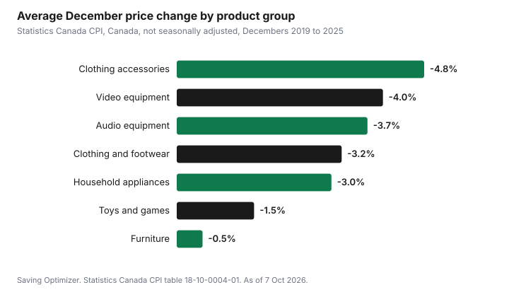

Household Items and Supplies · Canada
A Seasonal Clearance Calendar for Canada: The Best Month to Buy Appliances, TVs, Furniture, Clothing and More

For most household purchases in Canada, December is the best month to buy. In Statistics Canada's Consumer Price Index, prices for TVs and video equipment, audio equipment, clothing and footwear fell in every December from 2019 to 2025, and household appliances fell in six of those seven Decembers. Many of those prices then rose in January. Furniture breaks the pattern: its biggest average dip came in January, with a rise in March. Sporting goods dipped most in August, and lawn, garden and snow removal tools in October. Use the calendar below to time big purchases, and judge any "sale" against the item's real price history, not the crossed-out price.
Key takeaways
- TVs, audio, appliances and clothing: December was the cheapest month on average from 2019 to 2025.
- Many of those prices rose again in January.
- Furniture: January had the biggest average dip; March the biggest rise.
- Sporting and exercise equipment: August dip, March rise.
- Garden and snow tools: small October dip, August rise.
- Worked example uses made-up figures.
How this calendar was built
Statistics Canada publishes a monthly Consumer Price Index for dozens of product groups. We took the national index, not seasonally adjusted, from table 18-10-0004-01, and calculated the average change from one month to the next for each calendar month from February 2019 to August 2026. For December, that means seven Decembers (2019 to 2025). A negative average means prices for that group usually fell that month; we also show how many of those years it fell.
This is a national average across many stores and products, collected by Statistics Canada on its own schedule. It shows when prices usually move, not what one store will charge for one model. Treat it as a guide to timing, then compare the actual prices in front of you.
The calendar by product
| Product group | Best month(s) on average | Months to avoid on average |
|---|---|---|
| Video equipment (TVs and similar) | December -4.0% (fell 7 of 7 years); also September and November about -1.0% | January +1.9% |
| Audio equipment | December -3.7% (7 of 7) | January +4.1% |
| Household appliances | December -3.0% (6 of 7); May -1.2% | February +1.9%, January +1.6% |
| Furniture | January -0.8% (5 of 7); May -0.5% | March +1.8%, November +1.0% |
| Toys and games (not video games) | December -1.5% (6 of 7); November -1.3% | January +3.1% |
| Clothing and footwear | December -3.2% (7 of 7); June -1.1%; July -1.0% | March and September +1.4% |
| Clothing accessories | December -4.8% (7 of 7) | January +2.3% |
| Sporting and exercise equipment | August -1.7% (7 of 8) | March +3.6%, September +1.8% |
| Household tools, including lawn, garden and snow removal | October -0.6%; November -0.5% | August +1.9% |

Month by month
- January: furniture had its biggest average dip. Electronics, toys and appliances usually went back up. Airfare (air transportation) fell sharply after the holidays, an average of 18.0%.
- February and March: clothing prices usually rose as spring lines arrived, and furniture and sporting goods rose in March. A poor time for most big purchases.
- May: household appliances and furniture each had a small average dip.
- June and July: clothing and footwear usually dipped as summer clearance started.
- August: sporting and exercise equipment had its biggest average dip; garden and snow tools usually rose.
- September: clothing went back up for fall; TVs and video equipment dipped slightly; airfare fell sharply after summer, an average of 13.9%.
- October and November: garden and snow tools dipped slightly; toys and video equipment began to fall. Black Friday is November 27 and Cyber Monday November 30 in 2026.
- December: the broadest dip of the year, covering TVs, audio, appliances, clothing, accessories and toys. Boxing Day falls on Saturday, December 26 in 2026. Airfare rose the most of any month, an average of 24.1%.
Travel follows its own calendar
The same Statistics Canada data shows travel prices swinging far more than household goods. The air transportation index fell an average of 18.0% in January and 13.9% in September, and rose 24.1% in December and 9.2% in July. Traveller accommodation, which covers hotels and similar stays, fell an average of 11.7% in October (in all seven years) and 6.9% in November, and rose 13.5% in May and 7.7% in June.
In plain terms, shoulder seasons are cheapest and the holidays and early summer are most expensive. If your dates are flexible, a trip in late January, September or October usually costs less than the same trip in December or July. Our guide to getting home for the holidays compares flights, trains, buses and driving for the busiest weeks.
What the averages cannot tell you
- Specific models: a new model launch can make last year's version much cheaper in any month.
- Store-level clearance: a retailer clearing floor models or discontinued colours can beat the national pattern.
- Your region: the table uses the national index; provincial patterns can differ.
- Index vs shelf price: the CPI measures how prices change for a group of products, not the shelf price of the one item you want.
- Shipping, fees and taxes: a lower sticker price online can cost more after delivery and return fees.
Use the calendar to decide when to start watching prices closely, not as a promise of a discount. The biggest savings usually come from buying what you need at a fair price, rather than buying more because something is on sale.
Is it a real sale? The Competition Bureau tests
A December dip in the average does not make every sale tag honest. The Competition Bureau says a "regular" or "was" price is only fair if it passes one of two tests:
- Volume test: more than 50% of sales of the product were at that price or higher within a reasonable period, usually within a year, before or after the promotion.
- Time test: the product was offered in good faith at that price or higher for a substantial period of time, usually within a year, immediately before or after the promotion.
In practice, look at price history where you can, compare the same model number at several stores, and treat very large "was" prices with suspicion. Our guide to telling a real Black Friday deal from a fake discount explains how.
How to use the calendar
- List the big purchases you expect in the next 12 months.
- Match each one to its best month in the table.
- If an item breaks before then, buy what you need and use the store's price adjustment policy if the price drops soon after.
- Watch the same model's price for a few weeks before the sale month so you know a good price when you see it.
- Do not buy early just because a sale is advertised; the average dip for most groups is a few percent, not half off.
Price adjustment and price match policies can protect you if you buy before the dip. See price adjustment policies in Canada and price matching household items.
Worked example (made-up figures)
The Chens are a made-up example, and the prices are invented. Their old TV is fine but dated, and they need a new dresser and a lawn mower this year.
- They wait for December to replace the TV. A made-up $1,000 model drops 4%, about the December average for video equipment, saving $40, and they find a deeper promotion on the previous year's model.
- They buy the dresser in January instead of March, saving about the gap between January's -0.8% and March's +1.8% on a made-up $600 item, roughly $15.
- They buy the mower in October rather than in spring, when a made-up end-of-season promotion is deeper than the national average.
The national averages are small. The real savings come from combining good timing with promotions, previous-year models and price adjustment policies.
Sources
- Statistics Canada, Table 18-10-0004-01 Consumer Price Index, monthly, not seasonally adjusted (Canada; data to August 2026), statcan.gc.ca, as of 7 Oct 2026. Monthly averages calculated by Saving Optimizer.
- Competition Bureau Canada, Ordinary selling price (volume test and time test), competition-bureau.canada.ca, page modified 2025-12-18, as of 7 Oct 2026.
- Competition Bureau Canada, Misleading representations and deceptive marketing practices, competition-bureau.canada.ca, page modified 2026-06-01, as of 7 Oct 2026.
- Family, items and prices in the worked example are made up.
Frequently asked questions
What is the cheapest month to buy a TV in Canada?
December, on average. In Statistics Canada's CPI, video equipment prices fell in every December from 2019 to 2025, by an average of 4.0%, and usually rose in January.
When should I buy appliances in Canada?
December had the biggest average dip from 2019 to 2025 (about 3.0%), with a smaller dip in May. Prices usually rose in January and February.
When is furniture cheapest?
January had the biggest average dip (about 0.8%), and March the biggest rise, in Statistics Canada's data.
When are clothes cheapest?
December, then June and July. Clothing prices usually rose in March and September.
When does sporting equipment go on sale?
August had the biggest average dip for sporting and exercise equipment, and March the biggest rise.
How do I know a sale price is real?
The Competition Bureau's tests ask whether most sales, or a substantial period of offers, were at the regular price or higher, usually within a year.
Researched and drafted with AI assistance and fact-checked against official Canadian sources. How we create content.
Disclosure: No retailer is recommended. There are no affiliate links on this page and no partnership is claimed. Education only.